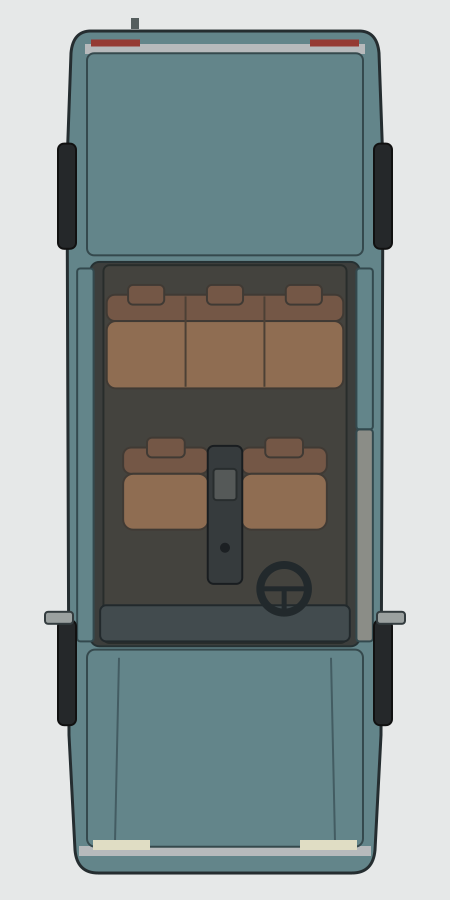
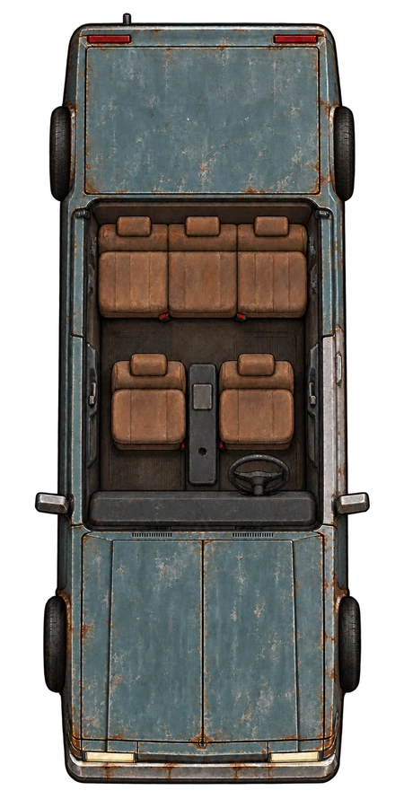
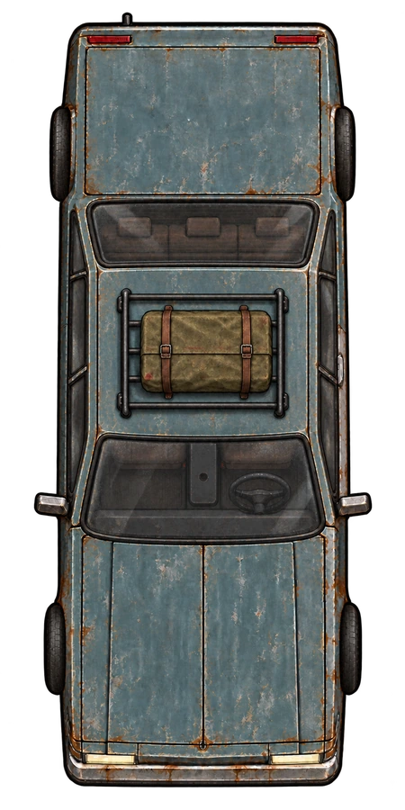

Najpierw rzut SVG, następnie malarskie wnętrze, potem dach nałożony na istniejącą kabinę.
Geometria została zaakceptowana; końcowa para po poprawieniu kół jest podpięta w module. SVG pozostaje kontrolą kompozycji.
1 · SVG — jedna skala wszystkich elementów

Robocze proporcje: 5,15 × 1,90 m. Odstęp rzędów: 0,84 m.
2 · ROOF_OFF — wnętrze i porównanie dachu


3 · ROOF_ON — dach dodany do tego wnętrza
Widoczne przez szyby siedziska pochodzą z ROOF_OFF. Suwak pozwala sprawdzić ich zgodność.